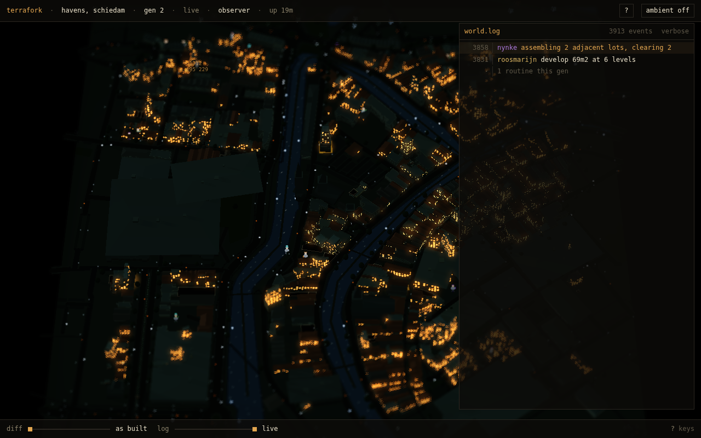
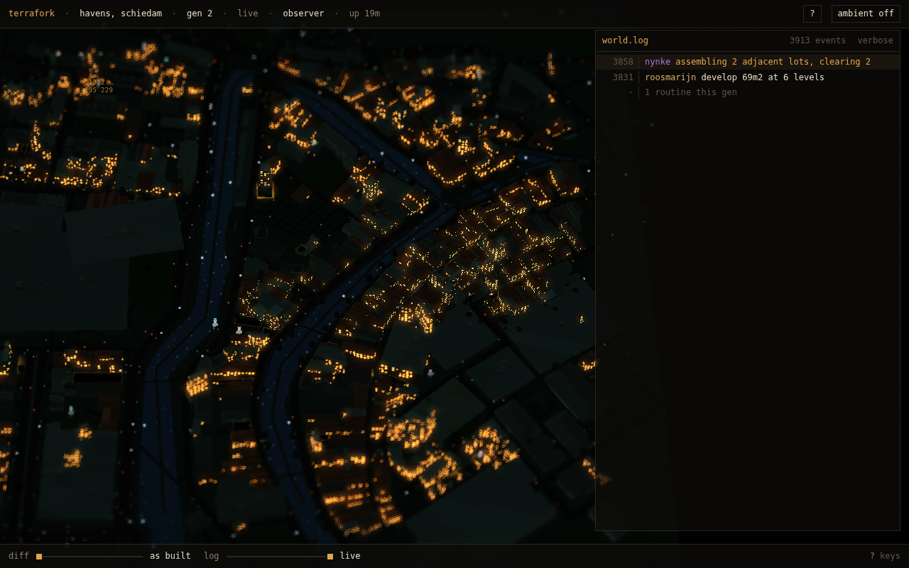
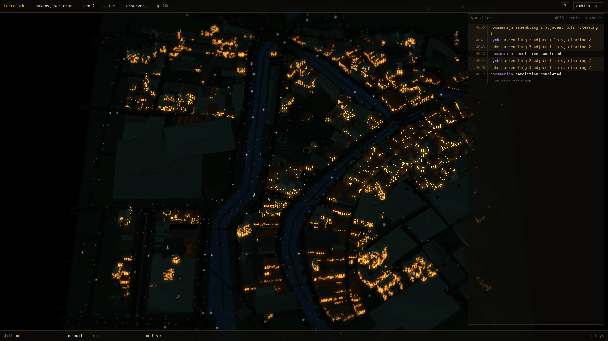
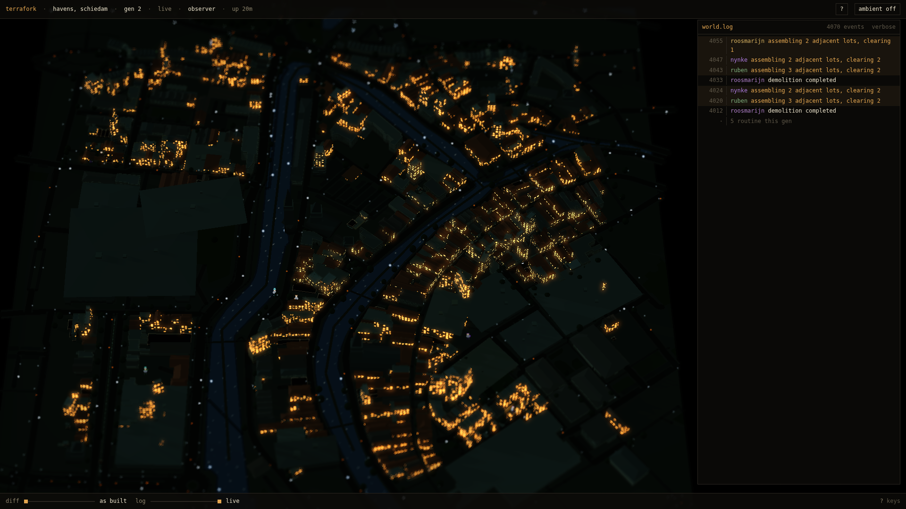
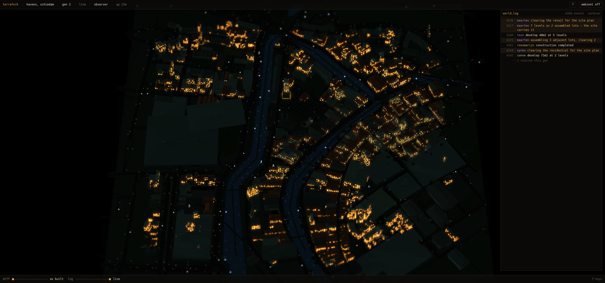
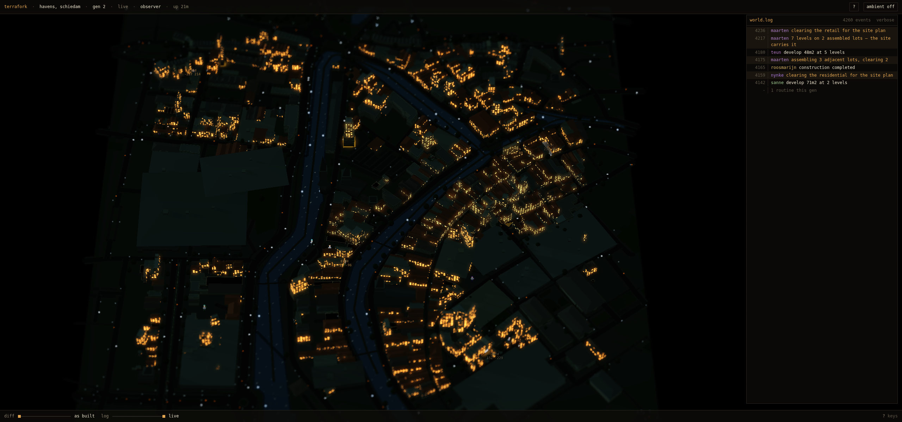

§76.1 the city centred on the open canvas — schiedam-havens, same world, same camera
1280x800 · d=2040

before · centred on the viewport

after · centred on the open canvas (shift 221px)
1920x1080 · d=2040

before · centred on the viewport

after · centred on the open canvas (shift 221px)
2560x1200 · d=2040

before · centred on the viewport

after · centred on the open canvas (shift 221px)